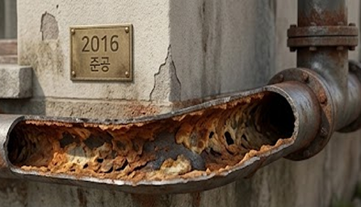
어떤 배관이든 시간이 지남에 따라 부식된다

우리가 매일 사용하는 물,
친환경 배관세척 클리닉부터
반영구적 사용이 가능한 부식억제&
스케일 제거까지 완벽하게 관리합니다.
Clean Water Solution
눈에 보이지 않는 배관 속 오염은
우리가 사용하는 생활용수의 수질에 영향을 줄 수 있습니다.

어떤 배관이든 시간이 지남에 따라 부식된다
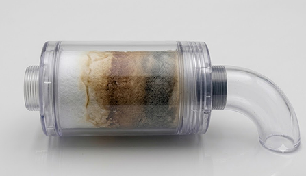
샤워기나 세면대 수전에 설치한 투명 필터가 금방 누렇게 변한다
세안이나 샤워 후 유독 피부가 심하게 당기거나 원인 모를 가려움이 있다
수돗물에서 가끔 비린내가 나거나 입을 행굴 때 물맛이 텁텁하다
※ 단 1개라도 해당한다면, 눈에 보이지 않는 배관 내벽의 산화철 부식과 중금속 스케일 침착이 진행 중일 가능성이 높습니다.
이제,
일회성 배관 청소만 진행하는 서비스가 아닙니다.
기존 배관 내부를 깨끗하게 세척 한 뒤,
크린워터기를 설치하여 녹물과 스케일 발생을
장기적으로 억제하는
통합 배관 관리 솔루션입니다.
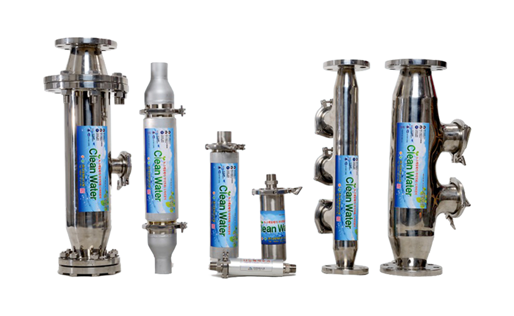
현장 환경과 배관 상태를 확인하고 오염 정도를 점검합니다.
화학 약품 없이 물을 활용한 방식으로 배관 내부의 녹과 스케일을 세척합니다.
네오디움 자석 원리를 활용한 장비를 설치하여 배관 부식과 스케일 발생을 억제합니다.
설치 후 관리 방법과 사용 환경에 맞는 유지관리 방향을 안내합니다.
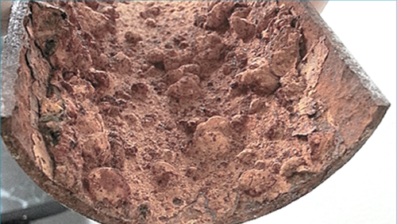
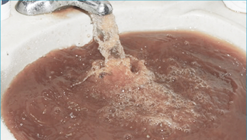
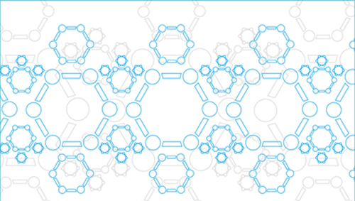
03 자화 이온수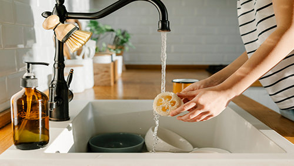
“한 번의 청소보다 중요한 것은
깨끗한 상태를 오래 유지
하는 관리입니다.”
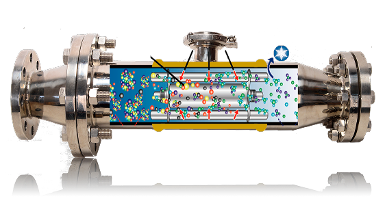
마시는 물에 정수기를 두신 현명한 선택.
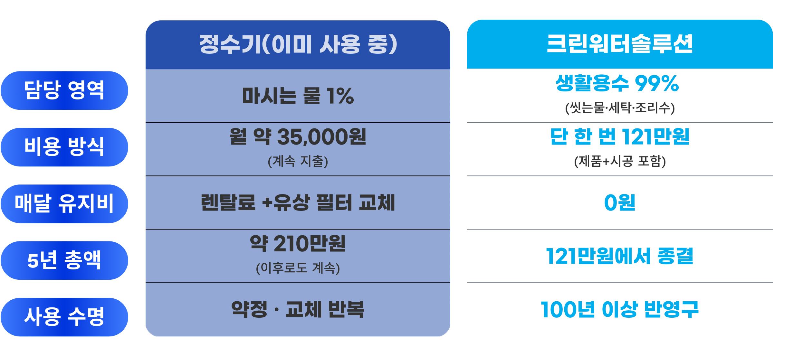
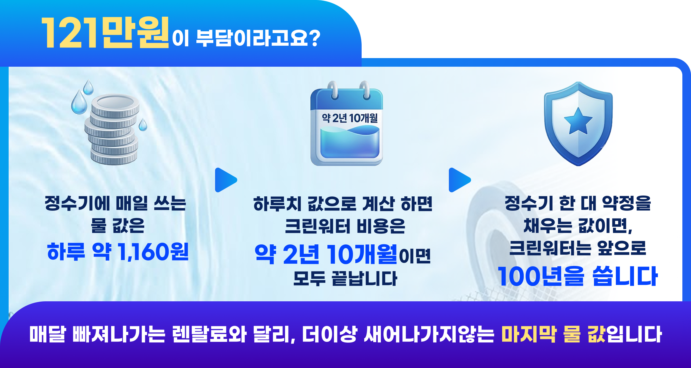
정부 부식 억제 규정치 30%를 뛰어넘는 압도적 성능
공인 기관 성능 검증 데이터
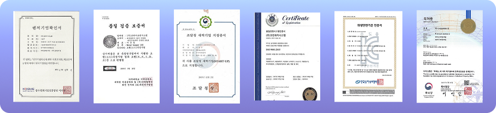
30년 이상 노후 배관의 산화철 및 유해 중금속을 물리적으로 94.8% 완벽 포집 입증 (제 PC24-04824호)
국방부 우수 상용품 시범사용 채택 품목으로 현장 운용적합성 및 기술성 공식 인정
스케일 포집장치 정밀 성능평가 시험 기준 통과로 완벽한 기술 유효성 획득
전국 곳곳에서 검증된 크린워터솔루션
아파트/주거시설부터 학교, 공공기관, 군부대, 농축수산업까지
크린워터솔루션 은 깨끗한 물로 모든
환경을 바꿉니다.
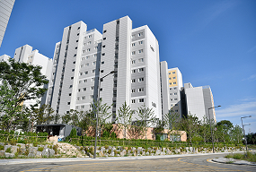
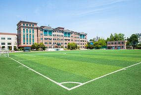
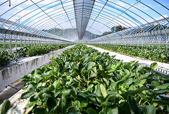
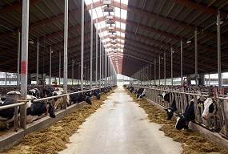
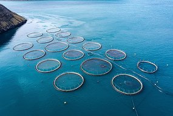
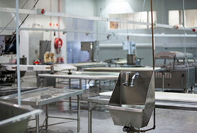
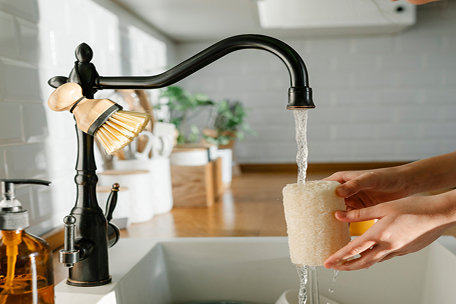
음식 맛 향상 / 악취 제거 / 청결 유지 / 연료 절감
살균 효과 / 식재료 신선도 유지 / 피부질환 개선
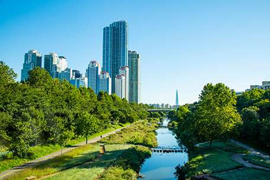
식중독 예방 / 폐수량 감소 / 유지관리비 절감
연료비 감소 / 물때 방지 / 위생적인 물 공급
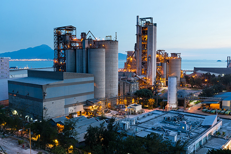
식품 가공 / 음료 제조업 / 건강원
제조공장 / 공업용수 / 배관플랜트
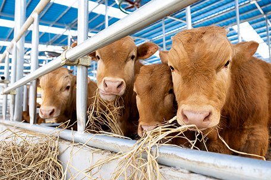
성장촉진 및 체중 증가 / 사료비 절감 / 면역력 강화
악취 제거 / 산란율 증가 / 폐사율 감소 / 녹조제거
더 많은 시공 사례는 블로그와 유튜브에서 확인하실 수 있습니다
자주 묻는 질문들을 모았습니다.
일반적인 고압 세척과는 다릅니다. 공기 미세버블 충격파와 자화수를 활용해 배관 손상 부담을 최소화하고, 배관 상태에 맞는 맞춤 시공으로 노후 배관도 안전하게 세척합니다.
아닙니다. 공기와 자화수를 활용한 친환경 무약품 세척공법입니다.
정수기는 물속의 불순물을 걸러내는 데 집중하지만, 크린워터기는 물을 단순히 깨끗하게 만드는 것을 넘어 물의 특성까지 고려한 새로운 방식의 수질 관리를 제공합니다.
아닙니다. 옥내 수도배관은 사용자가 직접 관리·교체해야 합니다. 일부 지자체에서 제한적인 지원사업을 운영하고 있습니다.
네, 가능합니다. 지하수는 수돗물보다 녹과 스케일이 많이 발생할 수 있으며, 당사의 배관세척 기술로 효과적으로 제거할 수 있습니다.